Genética
Linhagens selecionadas para elevar qualidade, marcha e consistência do plantel.
Mangalarga Marchador · Nova Friburgo, RJ
Desde 2009 formando campeões nacionais com manejo responsável, genética de elite e estrutura profissional.
Nossos fundamentos
Linhagens selecionadas para elevar qualidade, marcha e consistência do plantel.
Manejo, sanidade e nutrição com critério para desenvolvimento saudável e performance.
Preparação orientada para pista e evolução contínua, com foco em resultados reais.
Próximos eventos
Animais de alto padrão genético para criadores exigentes de todo o Brasil.
Garanhões, matrizes e potros de linhagem campeã. Transmissão ao vivo.
O Haras
Fundado em 2009 por Sávio Silva Oliveira em Nova Friburgo, RJ, o Haras Beija Flor nasceu da união entre duas grandes paixões: o amor pelo Mangalarga Marchador e o carnaval. Criado em São João Nepomuceno, MG, Sávio reencontrou os cavalos através de amigos criadores em Nova Friburgo — e esse reencontro despertou uma paixão que jamais se apagou.
O nome é uma homenagem à escola de samba do coração de Sávio, a multicampeã Beija Flor de Nilópolis. Em 2013, ele reuniu as duas paixões na Marquês de Sapucaí: o Mangalarga Marchador brilhou na avenida e o haras sagrou-se vice-campeão do Carnaval carioca.
Mais do que um criatório, o Haras Beija Flor é um santuário da família — um lugar de união, cavalgadas e celebração para todos os apaixonados pela raça.
Falar com a equipeNossa trajetória
Sávio Silva Oliveira funda a Agropecuária Beija Flor em Nova Friburgo, RJ, com foco exclusivo no Mangalarga Marchador.
Ainda nos primeiros anos, o haras já coloca animais no topo das exposições, conquistando seus primeiros títulos nacionais no Mangalarga Marchador.
O haras leva o Mangalarga Marchador ao desfile da Beija Flor de Nilópolis e conquista o vice-campeonato do Carnaval carioca.
Ao longo dos anos, garanhões, éguas e potros do plantel acumulam mais de 30 títulos nacionais em exposições por todo o Brasil.
O haras vive uma nova fase: os filhos de Sávio assumem as rédeas da operação, trazendo sangue novo e mantendo viva a tradição de excelência que definiu o Beija Flor desde o início.
Com mais de 16 anos de atividade, o Haras Beija Flor realiza leilões elite e atende criadores em todo o Brasil.
O que oferecemos
Além da venda de animais, oferecemos serviços completos para criadores e competidores.
Cobertura natural ou por sêmen refrigerado e congelado com nossos garanhões campeões. Consulte disponibilidade.
Preparação física e técnica para competições, com foco em marcha e condicionamento para pista.
ConsultarTransferência de embrião, ICSI e sêmen congelado com laboratório próprio e equipe especializada.
ConsultarRealizamos leilões com animais de alto padrão genético, atraindo criadores de todo o Brasil.
Ver próximosLaudos técnicos e avaliação de linhagem para compra e venda de animais com transparência total.
ConsultarPasso a passo
Do primeiro contato à entrega do animal, você tem suporte em cada etapa.
Entre em contato pelo WhatsApp e apresente o perfil do animal que você busca.
Nossa equipe indica os animais disponíveis com histórico, linhagem e avaliação técnica.
Agende uma visita ao haras ou receba vídeos e laudos completos do animal escolhido.
Condições flexíveis, documentação completa e suporte pós-venda garantido.
Fale direto com nossa equipe para receber atendimento rápido e orientado.
Animais disponíveis
Reprodutores, matrizes e jovens promessas selecionados com critério genético.
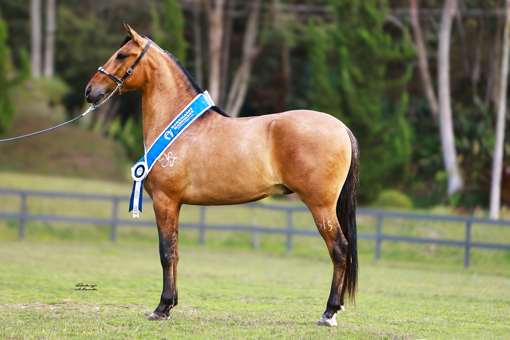
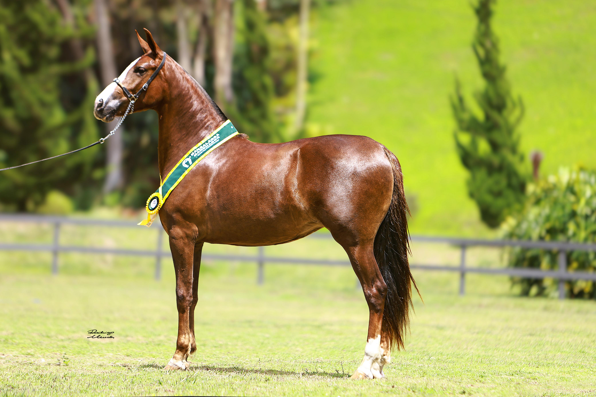
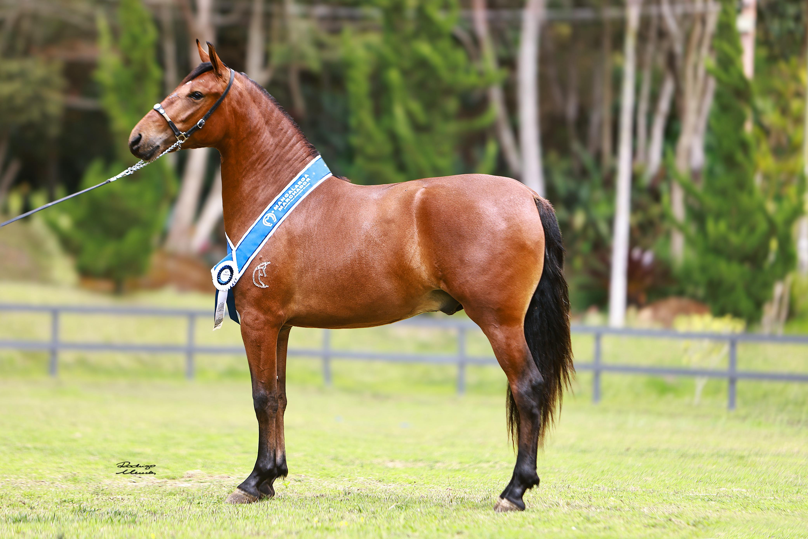
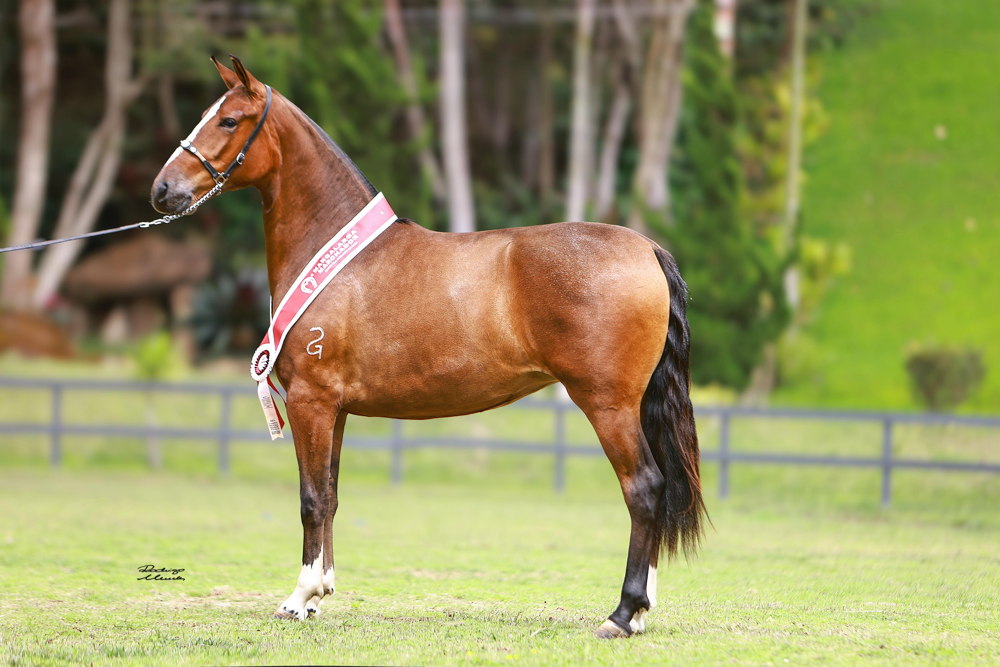
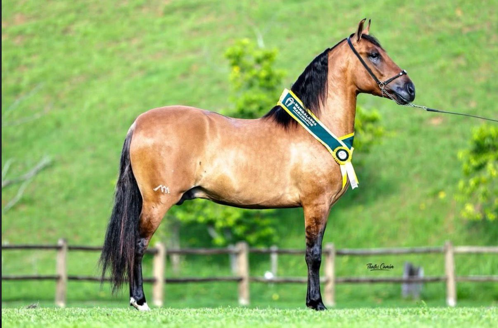
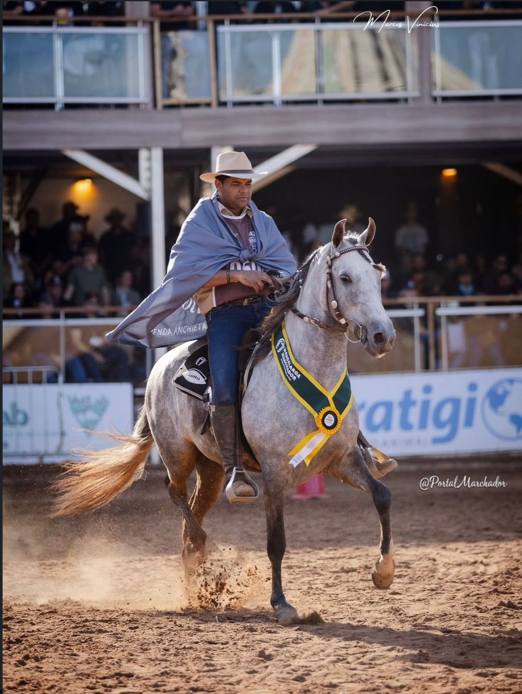
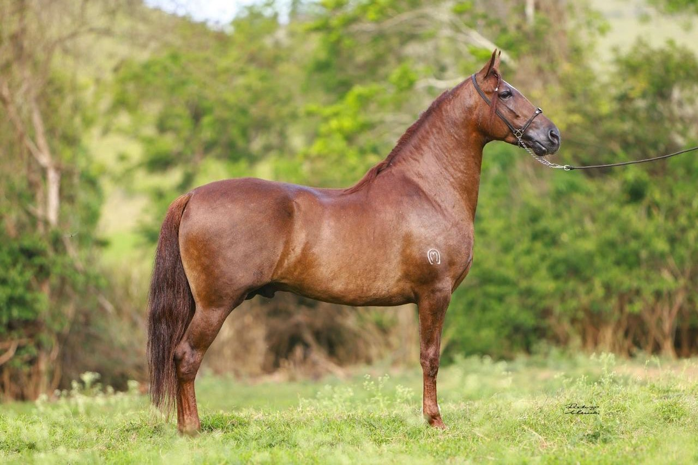
Nossos momentos
Registros do haras, animais e competições.
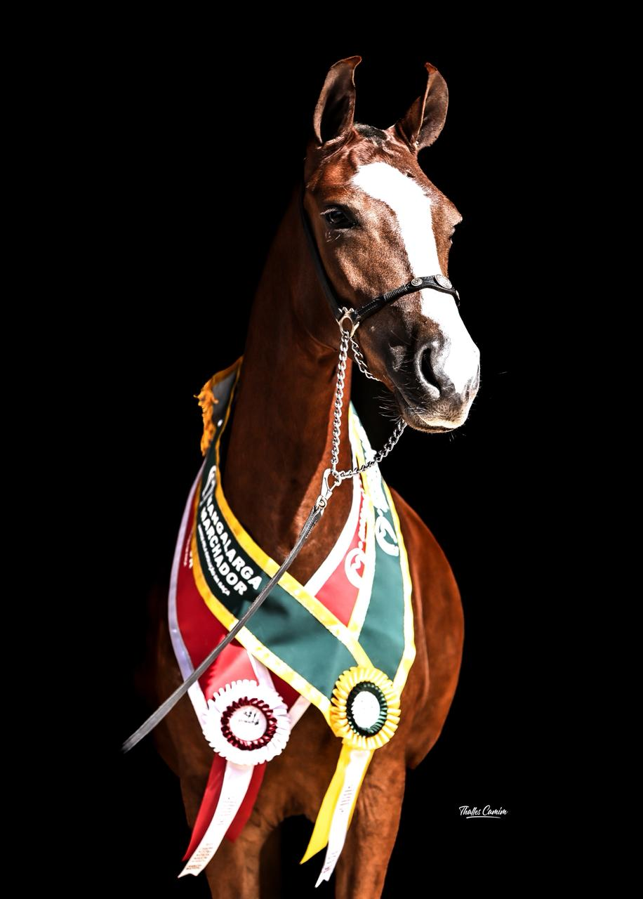
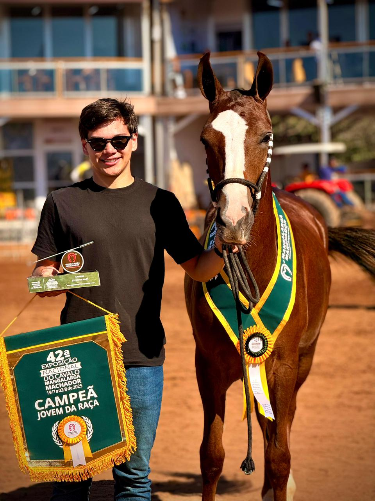

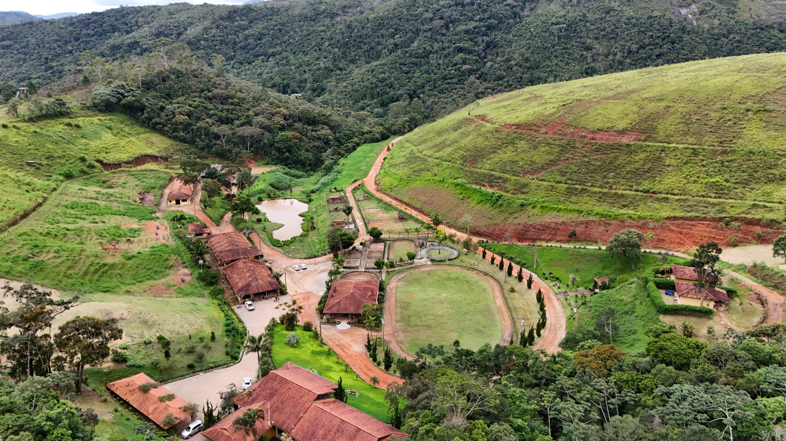
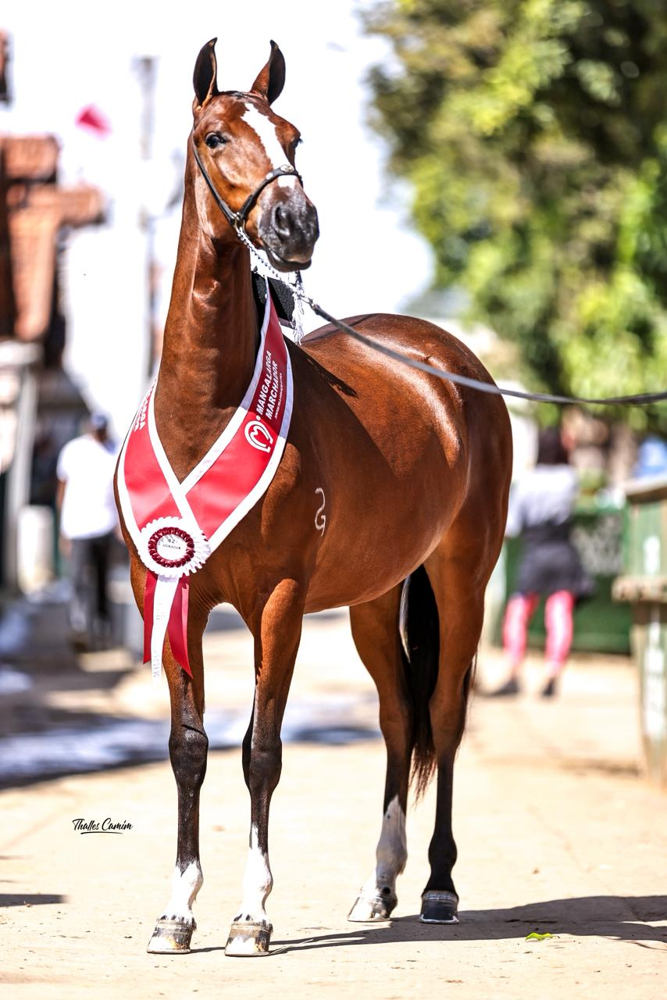
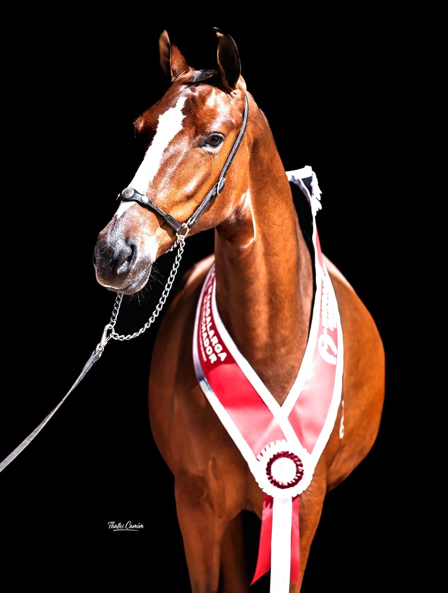
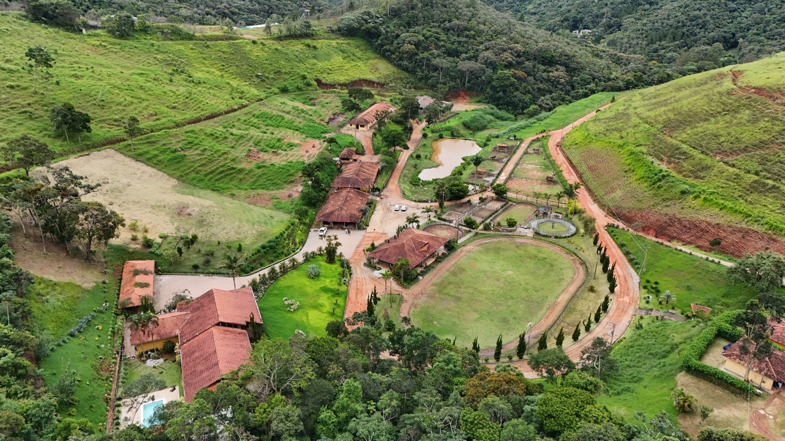
Resultados e clientes
"Comprei minha égua do Haras Beija Flor e foi a melhor decisão. Animal com histórico completo, linhagem impecável e suporte pós-venda de verdade."
"Animais preparados com seriedade. Meu garanhão chegou condicionado, com documentação em ordem e já estreou bem na pista."
"Transparência e profissionalismo do começo ao fim. Recomendo sem hesitar para quem quer um animal de qualidade real."
Dúvidas frequentes
Não encontrou o que procura? Fale direto com nossa equipe.
Falar no WhatsAppEntre em contato pelo WhatsApp informando o perfil do animal que busca. Nossa equipe apresentará as opções disponíveis com histórico, linhagem e avaliação técnica completa.
Sim. Agendamos visitas para você conhecer os animais pessoalmente. Para quem está em outro estado, enviamos vídeos detalhados, laudos veterinários e histórico completo.
Todos os animais comercializados possuem registro na ABCCMM, histórico de vacinação, laudos e documentação completa para transferência.
Indicamos parceiros de transporte especializados em equinos e orientamos todo o processo para garantir a chegada do animal em segurança.
Entre em contato para verificar disponibilidade de nossos reprodutores. Atendemos tanto cobertura natural quanto por sêmen refrigerado e congelado.
Oferecemos hospedagem para equinos com manejo técnico diário, nutrição balanceada, acompanhamento veterinário e instalações de alto padrão. Consulte disponibilidade e valores pelo WhatsApp.
Siga no Instagram
Acompanhe o dia a dia do haras, resultados e novidades do plantel.
Onde estamos
Estamos em Nova Friburgo, na Região Serrana do Rio de Janeiro. Agende sua visita com antecedência pelo WhatsApp.
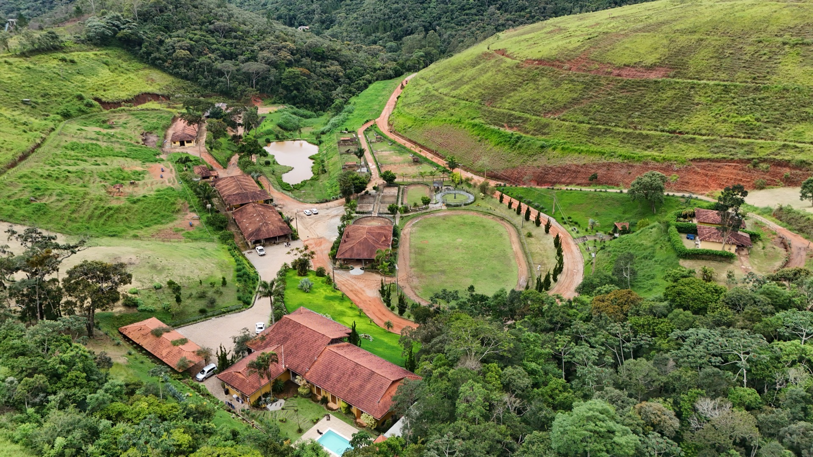